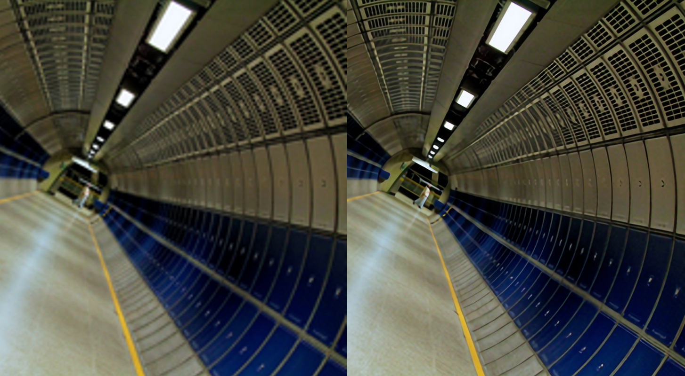
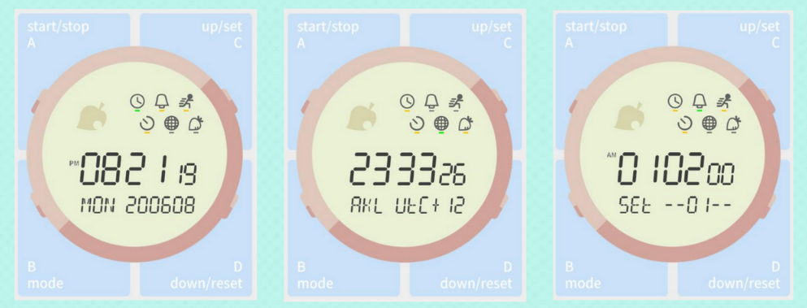
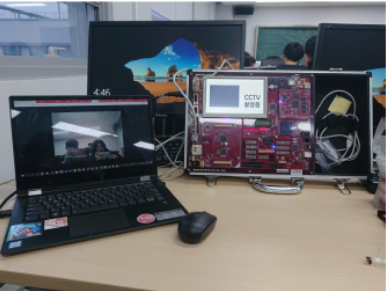
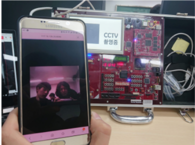

자기 소개
조현종
임베디드 부터 딥러닝까지 많은 컴퓨터 공학 분야에 관심을 가지고 공부하는 학부생 입니다. 특히 최근에는 Computer Vision에 관심을 가지고, 영상처리, openCV, 딥러닝
등을
관심있게 공부하고 있습니다.
임베디드 하드웨어와 소프트웨어를 다루며 익힌 로우레벨 컴퓨터 지식, 영상처리 능력과 빠른 학습, 다양한 리눅스
배포판을 써본 경험에서 오는 리눅스 사용능력, 빌드환경 구축 등이 강점입니다.
학력
건국대학교 전기전자공학과 학부과정 재학중 (2014-03 ~ 2021-02 졸업예정)
Mail : mbin96@gmail.com
Github : https://github.com/mbin96/
Skills
Project
SuperResolution : DeepLearning 이미지 해상도 개선 프로젝트

- 2020-01 ~ 2020-06 개인 프로젝트
- Pytorch 프레임워크 이용
- 의료 영상 네트워크 UNETPP 베이스 + CA, Back Projection등의 아이디어 사용
- 프로젝트
슬라이드 보기
OOAD & UML toy project: 객체지향 언어 협업 개발방법론

- 2020-04 ~ 2020-06 4인 팀 프로젝트 프로젝트
- UML 기반 알람, 세계시간, 타이머, 스탑워치 등의 기능 탑재 시계 구현 목표
- 팀 협업, UML 다이어그램 활용 개발 프로세스, 객체지향 개념 확립, git 사용
- 프로젝트 슬라이드
보기
- Github 바로가기
IP camera Solution: EMPOSIII 임베디드 보드 상 ip 카메라 솔루션 구현


- 2019-11 ~ 2019-12 3인 팀 프로젝트
- 웹브라우저 상 실시간 카메라 모듈 이미지 확인 및 클라이언트 프로그램 녹화 기능
- 리눅스 기반 개발, 리눅스 시스템 이해, 로우레벨 영상처리
- 프로젝트 보고서
보기
- Github 바로가기